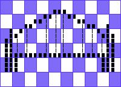

This article is the "Graphics programming with libtiff. A C library for manipulating TIFF images" tutorial by Michael Still rewritten to reflect differences between libtiff and LibTiff.Net.
Summary
TIFF is an extremely common but quite complex raster image format. LibTiff.Net, a free managed implementation of the TIFF specification, based on LibTiff, a standard ANSI C implementation. This article discusses some of the pitfalls of TIFF and guides you through use of the LibTiff.Net library. The article also shows examples of how to use LibTiff.Net for your black-and-white imaging needs.
TIFF (Tag Image File Format) is a raster image format that was originally produced by Adobe. Raster image formats store the picture as a bitmap describing the state of pixels, as opposed to recording the length and locations of primitives such as lines and curves. LibTiff.Net is one of the implementations of the TIFF specification. This article focuses on black-and-white TIFF images; a possible future article will cover color images.
The TIFF challenge
Most file format specifications define some basic rules for the representation of the file. For instance, PNG documents (a competitor to TIFF) are always big endian. TIFF, however, doesn't mandate things like this. Here are some examples of the seemingly basic things that it doesn't define:
Byte order: big endian or little endian Fill order of the bit within the image bytes: most significant or least significant bit first Meaning of a given pixel value for black and white: is 0 black or white?
Creating a TIFF file can be very easy, because it is rare to have to do any conversion of the data that you already have. On the other hand, it also means that reading in random TIFFs created by other applications can be very hard - you have to code for all possible combinations to be reasonably certain of having a reliable product.
So, how do you write an application that can read in all these different possible permutations of the TIFF format? The most important thing to remember is never make assumptions about the format of the image data you are reading in.
Writing TIFF files
First I'll show how to write a TIFF file out. Then I'll show how to read a TIFF file back into your program.
Infrastructure for writing
Bitmaps are traditionally represented inside your code by an array of bytes. In Listing 1, I set up LibTiff.Net and create a simple buffer that contains an image I can then write out to disk.
Listing 1. Setting up the infrastructure
using BitMiracle.LibTiff.Classic;
namespace WriteTiff
{
class Program
{
static void Main(string[] args)
{
byte[] buffer = new byte[25 * 144];
}
}
}
The code above is pretty simple. To use LibTiff.Net, all you need is to add reference to BitMiracle.LibTiff.NET.dll and add using statement for BitMiracle.LibTiff.Classic namespace. The byte buffer that we have defined here is going to be our black-and-white image, so we should define one of those next.
Writing the image
To make up for that boring example, I am now pleased to present you with what is possibly the worst picture of the Sydney Harbor Bridge ever drawn. In Listing 2, the image is already in the image buffer and all we have to do is save it to the file on disk. The example first opens a TIFF image in write mode and then places the image into that file.
Please note that for clarity I have omitted the actual hex for the image; this is available in the full version of this code, for those who are interested.
Listing 2. The writing code
using BitMiracle.LibTiff.Classic;
namespace WriteTiff
{
class Program
{
static void Main(string[] args)
{
byte[] buffer = new byte[25 * 144]
{
// boring hex omitted
};
// Open the TIFF file
using (Tiff image = Tiff.Open("output.tif", "w"))
{
if (image == null)
{
System.Console.Error.WriteLine("Could not open output.tif for writing");
return;
}
// We need to set some values for basic tags before we can add any data
image.SetField(TiffTag.IMAGEWIDTH, 25 * 8);
image.SetField(TiffTag.IMAGELENGTH, 144);
image.SetField(TiffTag.BITSPERSAMPLE, 1);
image.SetField(TiffTag.SAMPLESPERPIXEL, 1);
image.SetField(TiffTag.ROWSPERSTRIP, 144);
image.SetField(TiffTag.COMPRESSION, Compression.CCITTFAX4);
image.SetField(TiffTag.PHOTOMETRIC, Photometric.MINISWHITE);
image.SetField(TiffTag.FILLORDER, FillOrder.MSB2LSB);
image.SetField(TiffTag.PLANARCONFIG, PlanarConfig.CONTIG);
image.SetField(TiffTag.XRESOLUTION, 150.0);
image.SetField(TiffTag.YRESOLUTION, 150.0);
image.SetField(TiffTag.RESOLUTIONUNIT, ResUnit.INCH);
// Write the information to the file
image.WriteEncodedStrip(0, buffer, 25 * 144);
// file will be auto-closed during disposal
// but you can close image yourself
image.Close();
}
}
}
}
Windows Photo Viewer and other image viewers should be able to display output image without problems.
The sample code shows the basics of using the LibTiff.Net API. A few points worth noting:
- The buffers presented to and returned from LibTiff.Net each contain 8 pixels in a single byte. Thus, you have to be able to extract the pixels you are interested in. The use of masks, and the right and left shift operators, come in handy here.
- The Open(String, String) function is very similar to the fopen from C standard library (if you are familiar with it).
- We need to set the value for quite a few fields before we can start writing the image out. These fields give LibTiff.Net information about the size and shape of the image, as well as the way data will be compressed within the image. These fields need to be set before you can start handing image data to LibTiff.Net. There are many more fields for which a value could be set; I have used close to the bare minimum in this example.
- WriteEncodedStrip is the function call that actually inserts the image into the file. This call inserts uncompressed image data into the file. This means that LibTiff.Net will compress the image data for you before writing it to the file. If you have already compressed data, then have a look at the WriteRawStrip instead.
- Finally, we close the file with Close(). Although, if you call Dispose() (and you should call it) it's not necessary.
In case you're curious what the Sydney Harbor Bridge looks like, Figure 1 is a copy of the picture.
Figure 1. The Sydney Harbor Bridge, by Michael Still

Reading TIFF files
Reading TIFF files reliably is much harder than writing them. Unfortunately, I don't have enough space in this article to discuss all of the important issues, so some of them will need to be left for later articles. There are also plenty of pages on the Web that discuss the issues involved.
The issue that complicates reading black-and-white TIFF images the most is the several different storage schemes that are possible within the TIFF file itself. LibTiff.Net doesn't hold your hand much with these schemes, so you have to be able to handle them yourself. The three schemes TIFF supports are single-strip images, stripped images, and tiled images:
Single-strip image
This is a special case of a stripped image, as the name suggests. In this case, all of the bitmap is stored in one large block. I have experienced reliability issues on Windows machines with images that are single-strip. The general recommendation is that no one strip should take more than 8 kilobytes uncompressed, which, with black-and-white images limits you to 65,536 pixels in a single strip.
Stripped (or multiple-strip) image
Horizontal blocks of the image are stored together. More than one strip is joined vertically to make the entire bitmap. Figure 2 shows this concept.
Figure 2. The Sydney Harbor Bridge, in strips

Tiled image
Like your bathroom wall, it is composed of tiles. This representation is shown in Figure 3, and is useful for extremely large images. Tiles are especially useful when you want to manipulate only a small portion of the image at any one time.
Figure 3. The Sydney Harbor Bridge, in tiles

Tiled images are comparatively uncommon, so I will focus on stripped images in this article. Remember that the single-strip case is merely a subset of multiple-strip images.
Infrastructure for reading
The most important thing to remember when reading in TIFF images is to be flexible. The reading example (Listing 3 below) has the same basic concepts as the writing example (Listing 2 above), with the major difference being that the reading example needs to deal with many possible input images. Apart from stripping and tiling, the most important thing to be flexible about is photometric interpretation. Luckily, with black-and-white images there are only two photometric interpretations to worry about; with color, and to a certain extent grayscale images, there are many more.
What is photometric interpretation? Well, the representation of the image in the buffer is really a very arbitrary thing. I might code my bitmaps so that 0 means black (Photometric.MINISBLACK), whereas you might prefer that 1 means black (Photometric.MINISWHITE). TIFF allows both, so our code has to be able to handle both cases. In the example below, I have assumed that the internal buffers need to be in Photometric.MINISWHITE, so we will convert images that are in Photometric.MINISBLACK.
The other big thing to bear in mind is fill order, that is, whether the first bit in the byte is the highest value or the lowest. Listing 3 also handles both of these correctly. I have assumed that the buffer should have the most significant bit first. TIFF images can be either big endian or little endian, but LibTiff.Net handles this for us. Thankfully, LibTiff.Net also supports the various compression algorithms without you having to worry about those. These are by far the scariest area of TIFF, so it is still worth your time to use LibTiff.Net.
Listing 3. The reading code
using BitMiracle.LibTiff.Classic;
namespace ReadTiff
{
class Program
{
static void Main(string[] args)
{
// Open the TIFF image
using (Tiff image = Tiff.Open(args[0], "r"))
{
if (image == null)
{
System.Console.Error.WriteLine("Could not open incoming image");
return;
}
// Check that it is of a type that we support
FieldValue[] value = image.GetField(TiffTag.BITSPERSAMPLE);
if (value == null)
{
System.Console.Error.WriteLine("Undefined number of bits per sample");
return;
}
short bps = value[0].ToShort();
if (bps != 1)
{
System.Console.Error.WriteLine("Unsupported number of bits per sample");
return;
}
value = image.GetField(TiffTag.SAMPLESPERPIXEL);
if (value == null)
{
System.Console.Error.WriteLine("Undefined number of samples per pixel");
return;
}
short spp = value[0].ToShort();
if (spp != 1)
{
System.Console.Error.WriteLine("Unsupported number of samples per pixel");
return;
}
// Read in the possibly multiple strips
int stripSize = image.StripSize();
int stripMax = image.NumberOfStrips();
int imageOffset = 0;
int bufferSize = image.NumberOfStrips() * stripSize;
byte[] buffer = new byte[bufferSize];
for (int stripCount = 0; stripCount < stripMax; stripCount++)
{
int result = image.ReadEncodedStrip(stripCount, buffer, imageOffset, stripSize);
if (result == -1)
{
System.Console.Error.WriteLine("Read error on input strip number {0}", stripCount);
return;
}
imageOffset += result;
}
// Deal with photometric interpretations
value = image.GetField(TiffTag.PHOTOMETRIC);
if (value == null)
{
System.Console.Error.WriteLine("Image has an undefined photometric interpretation");
return;
}
Photometric photo = (Photometric)value[0].ToInt();
if (photo != Photometric.MINISWHITE)
{
// Flip bits
System.Console.Out.WriteLine("Fixing the photometric interpretation");
for (int count = 0; count < bufferSize; count++)
buffer[count] = (byte)~buffer[count];
}
// Deal with fillorder
value = image.GetField(TiffTag.FILLORDER);
if (value == null)
{
System.Console.Error.WriteLine("Image has an undefined fillorder");
return;
}
FillOrder fillorder = (FillOrder)value[0].ToInt();
if (fillorder != FillOrder.MSB2LSB)
{
// We need to swap bits -- ABCDEFGH becomes HGFEDCBA
System.Console.Out.WriteLine("Fixing the fillorder");
for (int count = 0; count < bufferSize; count++)
{
byte tempbyte = 0;
if ((buffer[count] & 128) != 0) tempbyte += 1;
if ((buffer[count] & 64) != 0) tempbyte += 2;
if ((buffer[count] & 32) != 0) tempbyte += 4;
if ((buffer[count] & 16) != 0) tempbyte += 8;
if ((buffer[count] & 8) != 0) tempbyte += 16;
if ((buffer[count] & 4) != 0) tempbyte += 32;
if ((buffer[count] & 2) != 0) tempbyte += 64;
if ((buffer[count] & 1) != 0) tempbyte += 128;
buffer[count] = tempbyte;
}
}
// Do whatever it is we do with the buffer - we dump it in hex
value = image.GetField(TiffTag.IMAGEWIDTH);
if (value == null)
{
System.Console.Error.WriteLine("Image does not define its width");
return;
}
int width = value[0].ToInt();
for (int count = 0; count < bufferSize; count++)
{
System.Console.Out.Write("{0:X2}", buffer[count]);
if ((count + 1) % (width / 8) == 0)
System.Console.Out.WriteLine();
else
System.Console.Out.Write(" ");
}
image.Close();
}
}
}
}
This code works by first opening the image and checking that it is one that we can handle. It then reads in all of the strips for the image and appends them together into one large memory block. If required, it also flips bits until the photometric interpretation is the one we can handle, and deals with having to swap bits if the fill order is wrong. Finally, our sample outputs the image as a series of lines composed of hex values. Remember that each of the values represents 8 pixels in the actual image.
Conclusion
In this article I have shown you how to write and read some simple black-and-white images using LibTiff.Net, and introduced some key issues to be aware of. Before you start coding with LibTiff.Net, remember to put some thought into what compression algorithm you should be using for your images - group 4 fax is great for black-and-white, but what you use for color really depends on your needs.